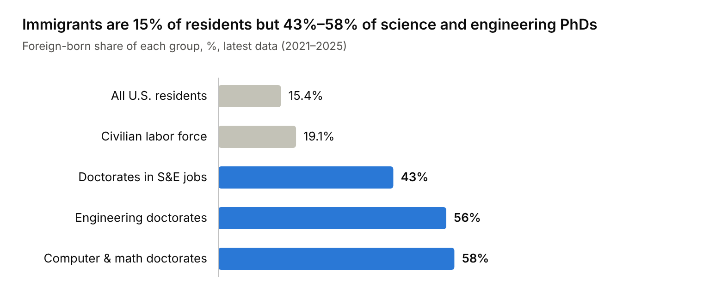
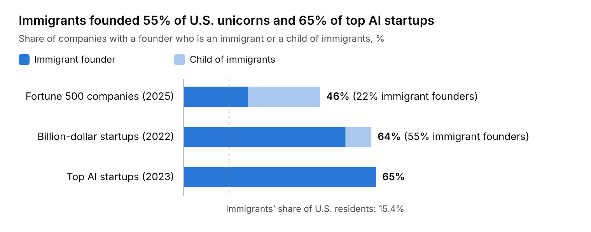
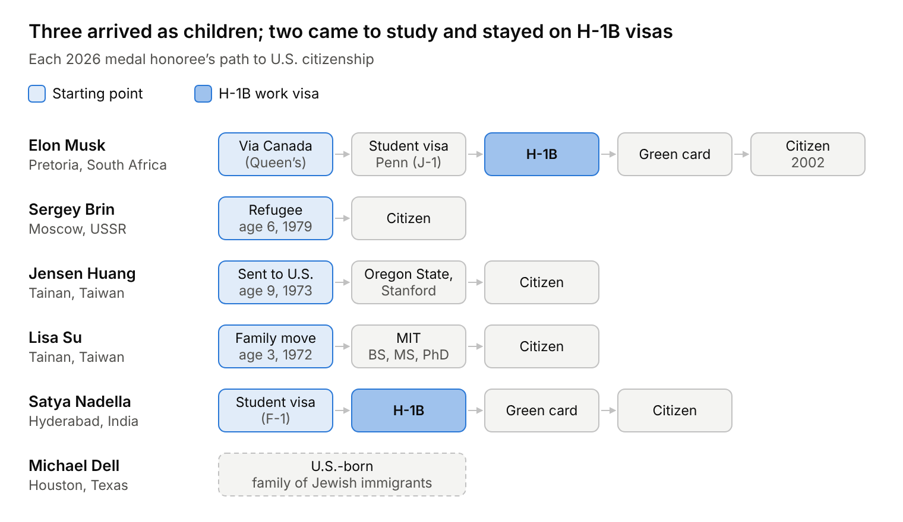
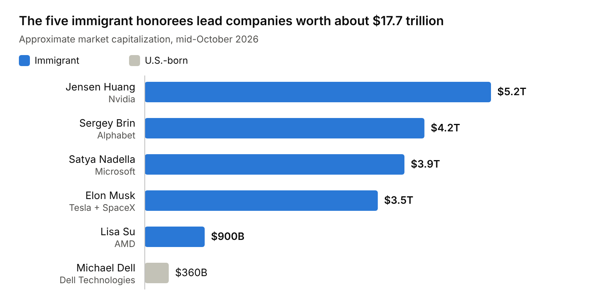
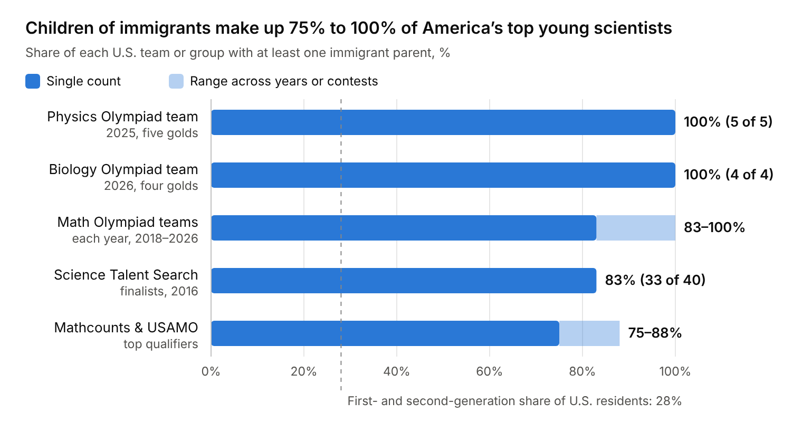
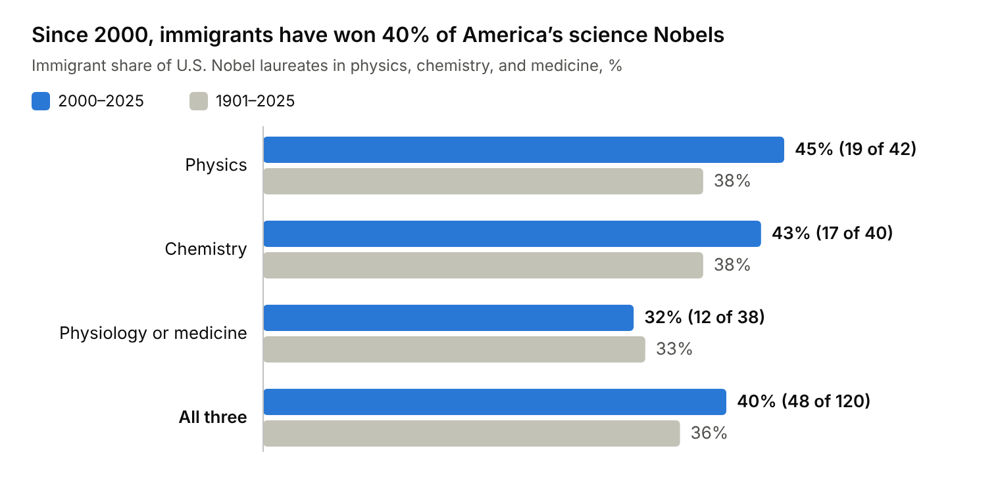
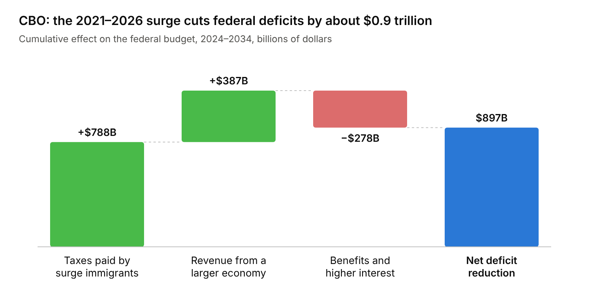

On October 8, 2026, President Donald Trump awarded the nation's highest science and technology honors—the National Medal of Science and the National Medal of Technology and Innovation—to six technology leaders: Elon Musk, Sergey Brin, Jensen Huang, Lisa Su, Satya Nadella, and Michael Dell. Five were born abroad, and the companies they founded or lead are worth more than 25% of the S&P 500. That same day, the Department of Labor suspended Microsoft and seven other employers from PERM, the program companies use to sponsor foreign workers for green cards. It also opened visa-fraud investigations into nine top research universities over J-1 visas, the exchange visas many foreign researchers hold. Six weeks earlier, the Department of Homeland Security had proposed a $103,265 fee on petitions for H-1B skilled-worker visas.
Photo: President Trump applauds the six medal recipients. Official White House Photo by Daniel Torok.
The usual political story is that immigration is zero-sum: every foreign-born worker takes a native-born worker's slot, drains the budget, and dilutes domestic talent. Judge immigration by an unmanaged border and both parties look negligent. Judge it by who starts America's companies, who pays down its deficits, who wins its Nobel and Presidential medals, and whose children sweep its Science Olympiads. The verdict is clear: America's superpower status runs on an immigrant talent engine that Washington is actively trying to dismantle.
The short version
- Immigrants are 15.4% of the population and nearly a fifth of the workforce. The U.S. has 51.9 to 53.3 million immigrants: 15.4% to 15.8% of the population, above the 1890 peak of 14.8%. They make up about 19% of the labor force. About 73% are here legally.
- They create more jobs than they take. Immigrants found firms at an 80% higher rate than U.S.-born citizens, at every firm size. Immigrants or their children founded 46.2% of the 2025 Fortune 500.
- Immigration cuts the federal deficit. The Congressional Budget Office (CBO) estimated that the 2021–2026 immigration surge adds $8.9 trillion to GDP and cuts deficits by $0.9 trillion over 2024–2034. The 2013 Senate reform bill that House Republicans killed would have cut deficits by $158 billion in its first decade and about $685 billion in its second.
- The frontier is foreign-born because the talent pool is. The U.S. has 4.1% of the world's people. Immigrants have won 40% of U.S. science Nobels since 2000 and 5 of the 6 October 2026 medals.
- Their children dominate youth STEM. All five 2025 U.S. Physics Olympiad gold medalists and 83% of the 2016 Science Talent Search finalists had immigrant parents.
- Both parties broke the system. Employment green-card and H-1B caps are essentially frozen at 1990 levels while GDP has quintupled. Republicans killed reform in 2007 and 2013 and now target legal skilled pipelines. Under the Biden administration, border crossings hit record highs in 2021–2023 before falling sharply in 2024, and Democrats never lifted the 7% per-country cap.
Every figure in the main text is documented, with sources and methodology, in the appendices.
1. Who we are by the numbers: The 15.4% share
The foreign-born share peaked at 14.8% in 1890. Under the 1924 national-origins quotas, it collapsed to 4.7% in 1970. The 1965 Hart-Celler Act abolished those quotas, and the share rebuilt: 7.9% in 1990, 12.9% in 2010, a record 15.8% (53.3 million) in January 2025, and 15.4% (51.9 million) by June 2025. Counting their U.S.-born children, first- and second-generation Americans are 28% of the country.

Source: NSB Science and Engineering Indicators 2024 (doctorates, 2021); BLS (labor force, 2025); Pew Research Center (population, 2025)
The higher the skill level, the larger the immigrant share: immigrants are overrepresented in the workforce and most overrepresented at the doctoral frontier.
Three facts stand out:
- Immigrants are workers, not dependents. They are 15.4% of residents but about 19% of the labor force, because most arrive at ages 18 to 45 with their schooling already paid for abroad. Their share of the labor force was 12% in 1995; in 2025 it meant 32.7 million workers.
- Most are here legally. 46% are naturalized citizens, 23% green-card holders, and 4% temporary visa holders. Of the 27% who are unauthorized, more than 40% (about 6 million in 2023) had temporary protection from deportation through TPS, DACA, a pending asylum claim, or parole.
- Skills form an hourglass. Immigrants match natives in college degrees (36% each) but are far likelier to lack a high school diploma (24% vs. 7%), filling jobs at both ends of the economy.
2. Do immigrants take jobs—or create them?
The lump of labor fallacy assumes a fixed number of jobs. If it held, 40 million women entering the workforce after 1960, and a population that has tripled since 1920, would have produced mass unemployment. Workers also consume, invest, and start companies. The real question is whether immigrants add more labor demand than labor supply, that is, whether they create more jobs than they take. Pierre Azoulay, Benjamin F. Jones, J. Daniel Kim, and Javier Miranda (AER: Insights, 2022) answered it with Census records covering every U.S. employer firm.

Source: American Immigration Council (Aug 2025); NFAP (2022, 2023)
The dashed line marks immigrants' share of the population; at the top of American business, immigrant founders run three to four times that share.
Immigrants found more firms of every size. Over 2005–2010, 0.83% of immigrant workers founded an employer firm, versus 0.46% of U.S.-born workers—an 80% premium that holds from 10-person startups to 10,000-person enterprises. Because immigrants are disproportionately employers, they raise the demand for workers more than they add to the supply. On net, they create more jobs than they take. Their firms are also 35% more likely to hold a patent and pay roughly the same wages as native-founded firms.
They built much of corporate America. The 231 "New American" Fortune 500 companies employ 15.4 million people and form a majority in professional services, manufacturing, and information. The pipeline runs through universities: 70% of full-time U.S. graduate students in AI-related fields are international.
Restriction exports jobs. When the H-1B cap fell from 195,000 to 65,000 in 2004, U.S. multinationals did not hire more Americans; they expanded affiliates in Canada, India, and China (Glennon, 2024). Conversely, H-1B-driven inflows of foreign STEM workers may explain 30%–50% of U.S. productivity growth from 1990 to 2010 (Peri, Shih & Sparber, 2015). The same study found that each 1-point rise in foreign STEM workers' share of a city's jobs raised wage growth for college-educated natives by 7 to 8 points.
Less-educated natives are largely spared. The National Academies (2017) found the long-run effect of immigration on native-born wages is very small. Immigrants and natives are imperfect substitutes: when immigrants take manual jobs, natives move into communication-intensive roles such as supervision and sales (Peri & Sparber, 2009). Where wage losses appear, they fall mainly on earlier immigrants, then on native-born high school dropouts.
3. Why 5 of 6 Presidential Medal honorees were immigrants
At the Science: A New Golden Age summit, President Trump presented National Medals of Science to Elon Musk, Sergey Brin, Jensen Huang, and Lisa Su, and National Medals of Technology and Innovation to Satya Nadella and Michael Dell. Five of the six were born abroad.

Source: The White House (Oct 8, 2026); AIP FYI (week of Oct 12, 2026); Musk's route by his own account (X, Oct 2024) and the Washington Post

Source: Market capitalizations approximate, mid-October 2026; Tesla and SpaceX combined
Immigrants are 15.4% of Americans yet won 83% of these medals and 40% of U.S. Nobel Prizes in physics, chemistry, and medicine since 2000 (3 of 6 in 2025; 4 of 6 in 2023). Three forces explain the gap:
- The global tail. If extraordinary talent is spread evenly across births, 96% of it is born outside the U.S., which has 4.1% of the world's people. A country that recruits from the top of the other 7.86 billion will see immigrants dominate its right tail.
- The American multiplier. Tracking International Mathematical Olympiad medalists, Agarwal, Ganguli, Gaulé, and Smith (2021; Research Policy, 2023) found that those who moved to the U.S. became up to six times more productive than equally talented medalists who moved elsewhere. American labs, capital, and markets turn talent into output.
- Self-selection. Crossing an ocean selects for the risk tolerance and ambition that frontier companies need. Brin's family made the crossing as refugees, Huang and Su as children, and Nadella on a student visa.
4. Why America's Olympiad medal winners come from immigrant families
The children of immigrants dominate U.S. youth science even more. In July 2025, all five members of the U.S. Physics Olympiad team won gold in Paris. The U.S. was the only country to do so. President Trump hosted them in the Oval Office that September. Every one came from an immigrant family, including Agastya Goel, son of Indian-born Stanford professor Ashish Goel. U.S. math teams, world champions in 2015, 2016, 2018, 2019, and 2024, show the same pattern.
So do finalists in the Science Talent Search, a national high-school science competition. The share with an immigrant parent rose from 60% in 2004 to 83% in 2016. And 75% had a parent who had worked on an H-1B, even though former H-1B holders are under 1% of the population.

Source: NFAP (Stuart Anderson); AAPT (2025); Mathematical Association of America (2024–2026); Center for Excellence in Education (2026)
Three filters compound:
- Parental selection. With employment green cards capped at 140,000 a year and 7% per country, Indian and Chinese parents typically cleared several hurdles. First came a university entrance exam: in India, roughly the top 1% on the JEE win a seat at an Indian Institute of Technology (IIT); in China, the top 0.1% on the Gaokao reach Tsinghua, Peking, or USTC. Then came U.S. Ph.D. admissions and tech hiring. Two such parents raise children in homes saturated with math.
- Imported training. Soviet, Chinese, and Indian mathematicians brought Olympiad culture with them, including the Russian School of Mathematics, founded in 1997 by immigrants Inessa Rifkin and Irina Khavinson and now serving more than 70,000 students. Where many native-born families invest childhood hours in travel sports, these families invest them in math, coding, and physics.
- Objective scoring. Outsiders without legacy networks steer children toward fields with indisputable scoring (Kao & Tienda, 1995; Louie, 2004). A correct Olympiad proof earns 7 of 7 points regardless of the student's last name.
5. By the laws: A 60-year policy scorecard (1965–2026)
How has Washington managed the laws that bring this talent in? Appendix A scores every major statute and executive action since 1965 on GDP, fiscal impact, talent, and backlogs.
The builders (1965–1990). Hart-Celler (1965) abolished national-origins quotas. The Immigration Reform and Control Act (1986) legalized 2.7 million unauthorized residents but created no legal channel for future low-skilled workers. The Immigration Act of 1990 created the H-1B visa (65,000 a year) and the 140,000-a-year employment green-card system that every October 2026 medalist, or their workforce, relied on.
The 36-year freeze. Congress has never permanently raised the 140,000 cap, even as nominal GDP grew from $6 trillion to over $30 trillion. The cap counts spouses and children (leaving about 65,000 to 70,000 workers a year) and limits each country to 7%, so India, with 1.44 billion people, gets the same allotment as Cyprus. By 2023 the backlog had reached 1.8 million cases, 1.1 million of them Indian, with new Indian applicants facing waits of up to 134 years.
What Republicans broke. A Bush-backed reform died in 2007 when a Senate vote to end debate (a cloture vote) failed 46–53. The no votes came from 37 Republicans, joined by 15 Democrats and one independent.
In 2013 the Senate passed S. 744 by 68–32: it doubled the Border Patrol, mandated E-Verify, cleared the STEM backlog, and legalized unauthorized immigrants who paid fines and back taxes. CBO scored it as cutting deficits by $158 billion in its first decade and about $685 billion in its second, and raising GDP 5.4% by 2033. House leaders refused a vote.
In February 2024, Senate Republicans killed their own bipartisan border deal at Donald Trump's instruction, keeping the issue alive for the election.
Since 2025, the administration has turned on legal skilled pipelines:
- a $100,000 H-1B fee imposed in September 2025, days before Trump hosted the Physics Olympiad champions (a court vacated it in June 2026), followed by a proposed $103,265 replacement in August 2026;
- J-1 visa-fraud probes of Harvard, Yale, Stanford, Brown, Pitt, UC Davis, Caltech, Arizona State, and MIT, which Nature reports could push international postdocs abroad;
- the October 8, 2026 PERM suspension of Microsoft, Adobe, Infosys, TCS, Wipro, HCLTech, Cognizant, and Capgemini, cutting off the main green-card path for thousands of backlogged engineers.
What Democrats own. The Biden administration unwound border enforcement before building processing capacity, and net migration reached roughly 2.8 million a year in 2023–2024. CBO projected a $0.9 trillion federal fiscal gain, but the near-term costs fell on cities such as New York, Chicago, and Denver, eroding public support until Biden restricted asylum in June 2024. With full control of Congress in 2021–2022, Democrats also let two measures drop out of the America COMPETES Act and Build Back Better: green-card recapture, which would have reclaimed green cards left unused in past years, and exemptions from the caps for STEM Ph.D.s. That left more than 250,000 "Documented Dreamers," children raised here on their parents' visas, at risk of losing legal status at 21.
Appendix A: The U.S. Immigration Policy Scorecard (1965–2026)
| Year | Law or Executive Policy | Coalition / President | Core Policy Mechanism | GDP & Talent Score | Federal Fiscal & Backlog Impact (CBO / Empirical) |
|---|---|---|---|---|---|
| 1965 | Immigration and Nationality Act (Hart-Celler) (P.L. 89-236) | Bipartisan (Dem-led) / L. Johnson (D) | Abolished 1924 national-origins quotas; established family reunification & professional skill preferences | Strongly Positive: Reopened U.S. to Asian & global STEM/entrepreneurial talent | Positive: Rebuilt prime-age workforce from 4.7% immigrant low in 1970 |
| 1980 | Refugee Act of 1980 (P.L. 96-212) | Bipartisan / J. Carter (D) | Standardized refugee admissions & asylum screening (regularized Soviet Jewish & Indochinese refugee inflows; Sergey Brin's family had arrived as Soviet refugees in 1979, just before the Act) | Positive: High long-run entrepreneurship & human-capital attainment among refugee cohorts | Net Positive after Year 8: NBER (Evans & Fitzgerald, 2017) found refugees arriving at ages 18–45 pay $21,000 more in taxes (all levels of government) than they receive in benefits over 20 years |
| 1986 | Immigration Reform and Control Act (IRCA) (P.L. 99-603) | Bipartisan / R. Reagan (R) | Legalized 2.7M unauthorized residents; created I-9 employer sanctions without new low-skilled visa channels | Positive for wages (+6% to +15%); Negative for future legal matching | Positive federal revenue via formal payroll tax compliance; failed to stop future unauthorized flows |
| 1990 | Immigration Act of 1990 (P.L. 101-649) | Bipartisan / G.H.W. Bush (R) | Created modern H-1B visa (65,000 cap) and EB-1 to EB-5 green cards (140,000 cap); set a 7% per-country limit | Transformative (foreign STEM inflows may explain 30% to 50% of 1990–2010 U.S. productivity growth) | Strongly Positive tax base expansion; however, static caps + 7% rule later created a 1.8M backlog |
| 1996 | IIRIRA (P.L. 104-208) | Republican Congress / B. Clinton (D) | Created 3- and 10-year re-entry bars; expanded expedited removal; alongside the 1996 welfare law (PRWORA), restricted federal benefits for noncitizens | Negative labor mobility: Locked seasonal circular migrants inside the U.S. permanently | Cut federal safety-net outlays, but turned temporary Mexican workers into permanent unauthorized households |
| 2000 | AC21 (American Competitiveness in the 21st Century Act) (P.L. 106-313) | Bipartisan / B. Clinton (D) | Temporarily raised H-1B cap to 195,000 (2001–2003); allowed H-1B extensions past 6 years if stuck in green-card backlog | Positive relief valve: Prevented immediate mass deportation of backlogged Indian/Chinese engineers | Positive high-earner income & payroll tax retention; expired back to 65k+20k cap in 2004 |
| 2012 | DACA Executive Memorandum | Executive Action / B. Obama (D) | Granted renewable 2-year work authorization and deportation deferral to ~800,000 childhood arrivals | Positive: Raised college attendance, business formation, and formal-sector wages | +$60B to +$100B decade tax contribution (est.); no pathway to permanent status due to Congressional inaction |
| 2013 | Senate "Gang of Eight" Bill (S. 744) (Passed Senate 68–32; Blocked in House) | Bipartisan Senate / Killed by House GOP | Cleared STEM green-card backlog; exempted U.S. STEM Ph.D.s; created startup visa; legalized 11M; doubled border patrol | CBO Score: +3.3% real GDP by 2023; +5.4% real GDP by 2033 | CBO Score: Cut federal deficits by $197B (Years 1–10) and ~$700B (Years 11–20) as reported from committee; $158B and ~$685B as passed by the Senate (Opportunity lost) |
| 2017–2020 | Trump I Executive Restrictions ("Buy American, Hire American") | Executive Action / D. Trump (R) | Spiked H-1B denial rates from 6% to 24%; travel bans; suspended green cards & work visas in 2020 | Negative: Accelerated U.S. multinational offshoring to Canada and India (Glennon, 2024) | Reduced high-bracket payroll & income tax inflows during tight pre-COVID labor markets |
| 2021–2024 | Biden Border Surge & Parole Expansion (plus CHIPS Act minus STEM green cards) | Executive Action / J. Biden (D) | Record 2.8M/yr net migration via asylum & humanitarian parole; failed to pass STEM green-card recapture in Congress | CBO Score: +$8.9 Trillion nominal GDP (2024–2034); +5.2M workers by 2033 | CBO Score: Cuts federal deficits by $0.9 Trillion ($900B) over 2024–2034, but strained municipal shelter budgets (CBO, June 2025) |
| 2025–2026 | Trump II Skilled-Visa & University Crackdown (H-1B fee hikes, J-1 probes, Oct 2026 PERM Ban) | Executive Action / D. Trump (R) | $100k H-1B fee (Sept 2025 proclamation; vacated June 2026) and proposed $103,265 cap-petition fee (Aug 2026); J-1 probes into 9 top universities; suspended Microsoft, Adobe & 6 IT firms from PERM green cards | Severely Negative: Directly targets the F-1/H-1B/PERM pipeline that produced 5 of 6 Oct 2026 Presidential Medalists | Negative long-run fiscal score: Shrinks top-decile taxpayer growth and drives frontier AI/STEM Ph.D. talent abroad |
Appendix B: The Talent & Fiscal Evidence
B.1: U.S. Nobel Prizes in Physics, Chemistry, and Medicine (2000–2025)

Source: National Foundation for American Policy, “Immigrants and Nobel Prizes: 1901–2025” (Oct 2025)
The pattern holds year to year: in 2025, 3 of 6 U.S. science laureates were immigrants; in 2023, 4 of 6; and in 2016, all 4 (all 6 if economics is included).
B.2: CBO Scoring of the 2021–2026 Immigration Wave on the U.S. Economy and Federal Budget (2024–2034)

Source: Congressional Budget Office, “Effects of the Immigration Surge on the Federal Budget and the Economy,” Pub. 60165 (July 23, 2024); labor force from CBO, “The Budget and Economic Outlook: 2024 to 2034” (Feb 2024)
New revenue outweighs new spending about 4 to 1. Taxes come mainly from individual income and payroll taxes; spending comes from premium tax credits, other refundable credits, and Medicaid, plus higher interest costs because the surge nudges interest rates up through 2034. CBO also projects that the surge adds $8.9 trillion to nominal GDP over the decade and raises real GDP 2.9% by 2034, and its February 2024 outlook adds 5.2 million people to the labor force by 2033, mostly of prime working age. The estimate excludes discretionary spending, which would rise by roughly $0.2 trillion if scaled to the larger population.
Appendix C: Methodology and Full References
Methodology Notes
- Population and Labor Force Shares: Foreign-born population counts include all individuals residing in the United States who were not U.S. citizens at birth (naturalized citizens, lawful permanent residents, temporary legal residents on non-immigrant visas, and unauthorized immigrants). To account for the 2024–2025 Census Bureau revisions to Net International Migration (NIM), both the Pew Research Center's revised American Community Survey / CPS series (51.9 million, 15.4% as of mid-2025) and the January 2025 CPS peak (53.3 million, 15.8%) are reported. Labor-force counts use BLS annual averages from the CPS.
- Job Creation vs. Job Displacement: To avoid small-sample bias, entrepreneurship comparisons rely on Azoulay et al. (2022), which links the U.S. Census Bureau's Longitudinal Business Database (LBD), Census business-owner surveys, Schedule K-1 partnership tax filings, and W-2 wage records to Social Security Administration (Numident) country-of-birth records.
- Fiscal Scores: Federal fiscal scores use official 10-year enactment or baseline estimates from the nonpartisan Congressional Budget Office (CBO) and Joint Committee on Taxation (JCT), which capture both direct tax/spending flows and macroeconomic feedback (GDP, labor supply, and interest-rate effects). State and local fiscal variations follow NASEM (2017) and CBO (June 2025).
Full References
- Agarwal, Ruchir, Ina Ganguli, Patrick Gaulé, and Geoff Smith (2021, 2023). "Why U.S. Immigration Matters for the Global Advancement of Science." IMF Working Paper No. 2021/042 and IZA Discussion Paper No. 14016 (2021); published in Research Policy (2023). Tracks International Mathematical Olympiad (IMO) medalists globally, finding that migrants to the United States are up to six times more productive than migrants to other countries, even after accounting for teenage talent.
- American Immigration Council (2025). "Nearly Half of Fortune 500 Companies in 2025 Were Founded by Immigrants or Their Children." Special Report, August 20, 2025. Documents that 231 of 500 Fortune 500 companies (46.2%) were founded by first- or second-generation immigrants, employing an average of 66,798 workers per firm.
- American Institute of Physics (AIP) (2026). "FYI: The Week of October 12, 2026." AIP FYI Science Policy News. Documents the October 8, 2026 Science: A New Golden Age summit at which President Trump presented National Medals of Science to Elon Musk, Sergey Brin, Jensen Huang, and Lisa Su, and National Medals of Technology and Innovation to Michael Dell and Satya Nadella.
- American Association of Physics Teachers (AAPT) & American Astronomical Society (AAS) (2025). "U.S. Physics Team Earned Five Gold Medals at the 2025 International Physics Olympiad." July 25, 2025 (with a White House Oval Office reception in late September 2025). Documents gold medalists Agastya Goel, Allen Li, Joshua Wang, Feodor Yevtushenko, and Brian Zhang.
- Anderson, Stuart (2017, 2022, 2023, 2025). "The Contributions of the Children of Immigrants to Science in America" (March 2017), "Immigrant Entrepreneurs and U.S. Billion-Dollar Companies" (July 2022), "AI and Immigrants" (June 2023), and "Immigrants and Nobel Prizes: 1901–2025" (October 2025). National Foundation for American Policy (NFAP) Policy Briefs, Arlington, VA.
- Azoulay, Pierre, Benjamin F. Jones, J. Daniel Kim, and Javier Miranda (2022). "Immigration and Entrepreneurship in the United States." American Economic Review: Insights, Vol. 4, No. 1, pp. 71–88 (and NBER Working Paper No. 27778). Finds using Census LBD records that immigrants found employer firms of all sizes at an 80% higher rate than native-born citizens, expanding net labor demand.
- Bier, David J. (2023). "1.8 Million in Employment-Based Green Card Backlog." Cato Institute, August 29, 2023, Washington, D.C.
- Card, David (1990, 2009). "The Impact of the Mariel Boatlift on the Miami Labor Market," ILR Review 43(2); and "Immigration and Inequality," American Economic Review 99(2): 1–21 (Richard T. Ely Lecture).
- Congressional Budget Office (CBO) (2013). "Cost Estimate and Macroeconomic Analysis of S. 744, Border Security, Economic Opportunity, and Immigration Modernization Act." June 18, 2013 (as reported by the Senate Judiciary Committee: deficits reduced by $197 billion over 2014–2023 and ~$700 billion over 2024–2033); and revised cost estimate for S. 744 as passed by the Senate, July 3, 2013 ($158 billion and ~$685 billion).
- Congressional Budget Office (CBO) (2024, 2025). "Effects of the Immigration Surge on the Federal Budget and the Economy." Publication No. 60165, July 23, 2024; "The Budget and Economic Outlook: 2024 to 2034," February 2024; and "Effects of the Surge in Immigration on State and Local Budgets in 2023," June 5, 2025.
- Evans, William N., and Daniel Fitzgerald (2017). "The Economic and Social Outcomes of Refugees in the United States: Evidence from the ACS." NBER Working Paper No. 23498.
- Glennon, Britta (2024). "How Do Restrictions on High-Skilled Immigration Affect Offshoring? Evidence from the H-1B Program." Management Science, Vol. 70, No. 2, pp. 907–930 (NBER Working Paper No. 27538, 2020).
- Kao, Grace, and Marta Tienda (1995). "Optimism and Achievement: The Educational Performance of Immigrant Youth." Social Science Quarterly, 76(1): 1–19.
- Louie, Vivian (2004). Compelled to Excel: Immigration, Education, and Opportunity among Chinese Americans. Stanford, CA: Stanford University Press.
- National Academies of Sciences, Engineering, and Medicine (NASEM) (2017). "The Economic and Fiscal Consequences of Immigration." Edited by Francine D. Blau and Christopher Mackie. Washington, D.C.: The National Academies Press.
- National Science Board / NCSES (2024). "The STEM Labor Force: Scientists, Engineers, and Skilled Technical Workers." Science and Engineering Indicators 2024 (NSB-2024-5). Foreign-born share of doctorate holders in S&E occupations (43%), computer and mathematical sciences (58%), and engineering (56%).
- Peri, Giovanni, and Chad Sparber (2009). "Task Specialization, Immigration, and Wages." American Economic Journal: Applied Economics, 1(3): 135–169.
- Peri, Giovanni, Kevin Shih, and Chad Sparber (2015). "STEM Workers, H-1B Visas, and Productivity in US Cities." Journal of Labor Economics, 33(S1): S225–S255.
- Pew Research Center (2025). "Key Findings About U.S. Immigrants" (now titled "What the Data Says About Immigrants in the U.S."). Analysis of U.S. Census Bureau ACS and CPS data, August 21, 2025.
- U.S. Bureau of Labor Statistics (2026). "Foreign-Born Workers: Labor Force Characteristics — 2025." USDL-26-0760, May 19, 2026.
- The White House (2026). "President Trump Presents National Medals of Science and National Medals of Technology and Innovation." October 8, 2026.
- CNBC (2026). "U.S. suspends Microsoft, Adobe from green card labor program in foreign worker crackdown." October 8, 2026. Labor Secretary Keith Sonderling and Vice President JD Vance announce PERM suspensions for Microsoft, Adobe, Cognizant, Infosys, Tata, Wipro, HCL, and Capgemini.
- STAT News (2026). "Trump administration investigates 9 universities for alleged visa fraud." October 8, 2026.
- Nature (2026). "US government probe into postdoc visas worries scientists." October 19, 2026 (doi:10.1038/d41586-026-03345-z).
- Politico Decoded (2026). "Microsoft's president warns White House against skilled immigration crackdown." Interview with Brad Smith at the International AI Summit, Dublin, October 2026.
- U.S. Department of Homeland Security (2026). "Fee for Certain H-1B Petitions" (proposed rule). Federal Register, August 25, 2026.
- Mathematical Association of America (2024–2026). Team USA results at the 65th, 66th, and 67th International Mathematical Olympiads (1st place 2024; 2nd place 2025 and 2026).
- Center for Excellence in Education (2026). "U.S. Students Earn Four Gold Medals at 2026 International Biology Olympiad in Vilnius, Lithuania." July 23, 2026.
Comments